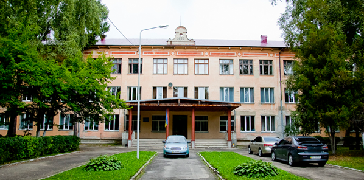

Вхід на сайт
Останні новини

Настільна лампа авфіаів.
вчора, 17:58

Фільм «Rain Man».
18.09.2010, 04:12

Чувак в Макдоналдсі.
30.02.2011, 18:14

Штани штани штани. І ше трохи штанів.
сьогодні, 23:55

Якась бабця.
30.02.2011, 18:14
Пошук
Головна
Львівський фізико-математичний ліцей при Львівському національному університеті імені Івана Франка — це загальноосвітній навчальний заклад із поглибленим вивченням природничих дисциплін, який дає змогу здобути освіту понад державний освітній мінімум, здійснює науково-практичну підготовку здібної, обдарованої учнівської молоді.
{kind=link}
Ліцей — це експериментальний майданчик Львівського національного університету імені Івана Франка, член Асоціації гімназій і ліцеїв України.
Ліцей має ліцензію на такі профілі:
- фізико-математичний (після 7-го класу);
- фізико-математичний (після 8-го класу);
- математико-географічний (після 8-го класу);
- хіміко-біологічний (після 8-го класу);
і гарантує кожному ліцеїстові умови для реалізації здібностей шляхом індивідуального навчання через вибір спеціалізації та різноманітні форми і методи навчання.
Ліцей — це шанс отримати ґрунтовні знання з фізики, математики, інформатики, хімії, біології, англійської мови та інших предметів, а через чотири роки стати студентом Львівського національного університету імені Івана Франка або іншого престижного вищого навчального закладу України.